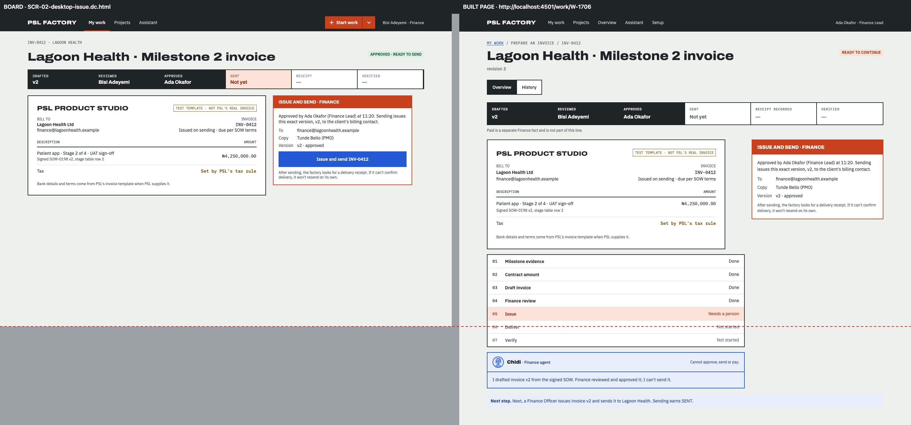
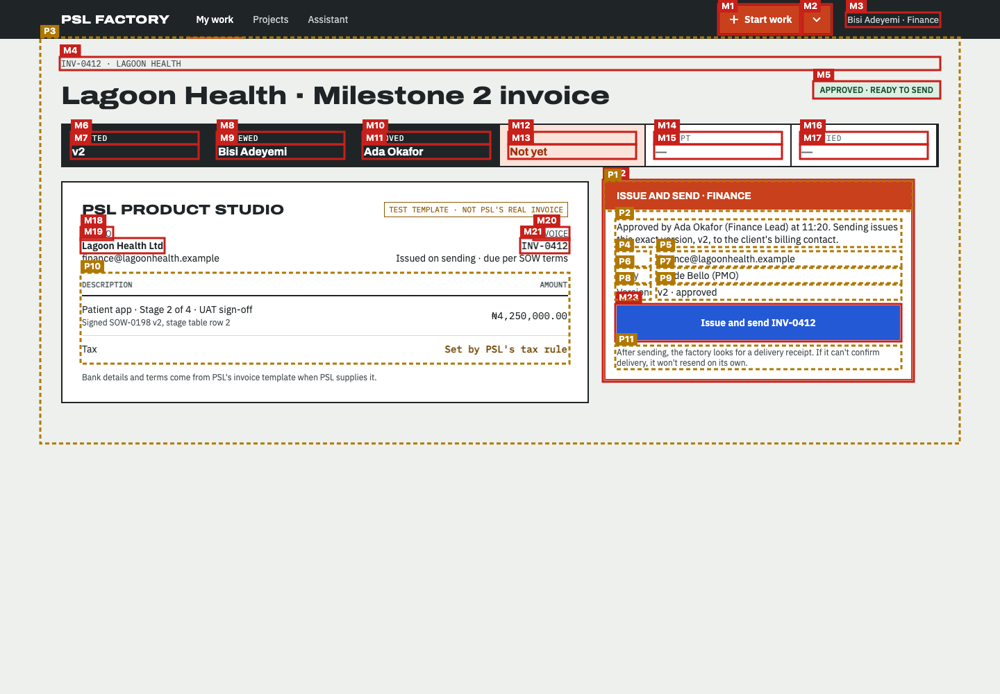
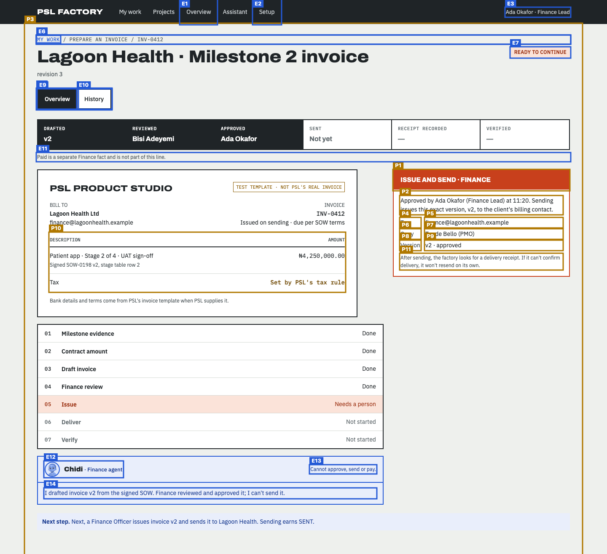
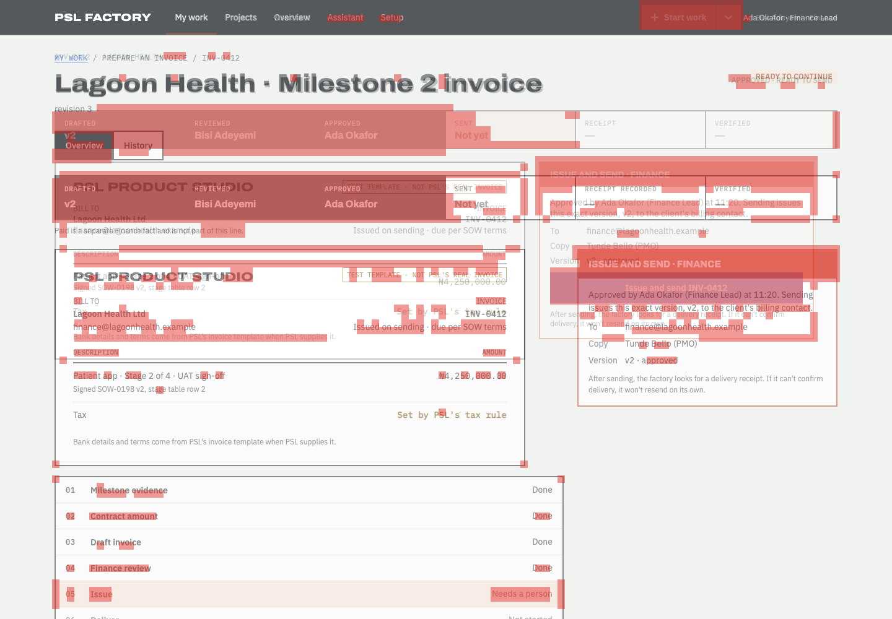

Does the built page follow the design?
Board SCR-02-desktop-issue.dc.html compared with http://localhost:4501/work/W-1706 at 1440px wide · 2026-11-14T08:22:55.149Z
- 23 board item(s) are missing from the page and are not approved exceptions (coverage 54.9% with exceptions, needs 100%).
- Visual match 71.6 is below 90.
- 11 item(s) are in a different place; review them (not part of the pass rule unless --strict-position).
28 of 51 things drawn on the board were found on the page: headings, buttons, links, search and filter controls, table columns, labels and the repeated rows (counted once, not per row).
How closely the shapes line up: blocks, bars, tables and text areas, compared in 12px squares over the top 1000px. Different words in the same place still count as a match, so sample data does not lower the score.
Missing from the built page 23
Drawn on the board but not found on the page. Each one must be built, or approved as an exception.
| # | What | Text on the board | Where on the board | Exception |
|---|---|---|---|---|
| M1 | Link | Start work | right, 8px down | — |
| M2 | Link | More ways to start | right, 8px down | — |
| M3 | Text | Bisi Adeyemi · Finance | right, 20px down | — |
| M4 | Text | INV-0412 · LAGOON HEALTH | middle, 84px down | — |
| M5 | Text | APPROVED · READY TO SEND | right, 119px down | — |
| M6 | Text | DRAFTED | left, 192px down | — |
| M7 | Text | v2 | left, 210px down | — |
| M8 | Text | REVIEWED | left, 192px down | — |
| M9 | Text | Bisi Adeyemi | left, 210px down | — |
| M10 | Text | APPROVED | middle, 192px down | — |
| M11 | Text | Ada Okafor | middle, 210px down | — |
| M12 | Text | SENT | middle, 192px down | — |
| M13 | Text | Not yet | middle, 210px down | — |
| M14 | Text | RECEIPT | right, 192px down | — |
| M15 | Text | — | right, 210px down | — |
| M16 | Text | VERIFIED | right, 192px down | — |
| M17 | Text | — | right, 210px down | — |
| M18 | Text | BILL TO | left, 329px down | — |
| M19 | Text | Lagoon Health Ltd | left, 345px down | — |
| M20 | Text | INVOICE | middle, 329px down | — |
| M21 | Text | INV-0412 | middle, 345px down | — |
| M22 | Side panel | (side panel) | right, 261px down | — |
| M23 | Link | Issue and send INV-0412 | right, 440px down | — |
In a different place 11
Found on both, but in a different order, side of the page, or area (for example inside the table frame instead of above it).
| # | What | How it moved |
|---|---|---|
| P1 | Text ISSUE AND SEND · FINANCE |
|
| P2 | Text Approved by Ada Okafor (Finance Lead) at 11:20. Sending issues this exact version, v2, to the client's billing contact. |
|
| P3 | Main area |
|
| P4 | Text To |
|
| P5 | Text finance@lagoonhealth.example |
|
| P6 | Text Copy |
|
| P7 | Text Tunde Bello (PMO) |
|
| P8 | Text Version |
|
| P9 | Text v2 · approved |
|
| P10 | Table |
|
| P11 | Text After sending, the factory looks for a delivery receipt. If it can't confirm delivery, it won't resend on its own. |
|
Looks different 5
Found on both, but styled differently: table rows and cells, fonts, colours, underlines, outlines, corners. Not part of the score; check each one against the board.
| What | Difference |
|---|---|
| Link "My work" |
|
| Heading "Lagoon Health · Milestone 2 invoice" |
|
| Table column "DESCRIPTION" |
|
| Table column "AMOUNT" |
|
| Text "ISSUE AND SEND · FINANCE" |
|
On the page but not on the board 14
Built but not drawn. Some are expected (data, status lines); the rest need the design engineer to approve or remove them.
| # | What | Text on the page | Where on the page |
|---|---|---|---|
| E1 | Link | Overview | left, 0px down |
| E2 | Link | Setup | middle, 0px down |
| E3 | Text | Ada Okafor · Finance Lead | right, 19px down |
| E4 | Navigation area | Breadcrumb | middle, 85px down |
| E5 | Text | MY WORK / PREPARE AN INVOICE / INV-0412 | middle, 85px down |
| E6 | Link | MY WORK | left, 86px down |
| E7 | Text | READY TO CONTINUE | right, 113px down |
| E8 | Navigation area | Work item | left, 211px down |
| E9 | Link | Overview | left, 213px down |
| E10 | Link | History | left, 213px down |
| E11 | Text | Paid is a separate Finance fact and is not part of this line. | middle, 364px down |
| E12 | Heading | Chidi · Finance agent | left, 1096px down |
| E13 | Text | Cannot approve, send or pay. | middle, 1105px down |
| E14 | Text | I drafted invoice v2 from the signed SOW. Finance reviewed and approved it; I can't send it. | left, 1160px down |
Pictures
The red dashed line on the side-by-side marks how far down the visual score looks. On the marked board, red boxes are missing items (M). On the marked page, amber boxes moved (P) and blue boxes are extra (E). In the difference picture both screens are laid over each other and red squares are where the shapes do not line up.






Notes about this run
- Images: /_blob/ images are served from /Users/Hunchoo/psl-factory/design/mascots/canvas-assets.json (19 mapped).
Found on both (28)
| Navigation area | Main | |
| Text | PSL FACTORY | |
| Link | My work | |
| Link | Projects | |
| Link | Assistant | |
| Main area | ||
| Heading | Lagoon Health · Milestone 2 invoice | |
| Text | PSL PRODUCT STUDIO | |
| Text | TEST TEMPLATE · NOT PSL'S REAL INVOICE | |
| Text | BILL TO Lagoon Health Ltd finance@lagoonhealth.example | |
| Text | INVOICE INV-0412 Issued on sending · due per SOW terms | |
| Table | ||
| Table column | DESCRIPTION | |
| Table column | AMOUNT | |
| Text | Patient app · Stage 2 of 4 · UAT sign-off Signed SOW-0198 v2, stage table row 2 | |
| Text | ₦4,250,000.00 | |
| Text | Tax | |
| Text | Set by PSL's tax rule | |
| Text | Bank details and terms come from PSL's invoice template when PSL supplies it. | |
| Text | ISSUE AND SEND · FINANCE | |
| Text | Approved by Ada Okafor (Finance Lead) at 11:20. Sending issues this exact version, v2, to the client's billing contact. | |
| Text | To | |
| Text | finance@lagoonhealth.example | |
| Text | Copy | |
| Text | Tunde Bello (PMO) | |
| Text | Version | |
| Text | v2 · approved | |
| Text | After sending, the factory looks for a delivery receipt. If it can't confirm delivery, it won't resend on its own. |
How the scores are worked out
Element coverage. The board is drawn locally from its own template and sample data. From the drawn board the check lists everything a person sees or uses: page areas (navigation, main, search), headings, links, buttons, form fields with their labels, table column headers, filter, search and pagination controls and fixed labels. Rows drawn from sample data count once, as a pattern ("table rows with these columns"). Each item is looked for on the page by its kind and its words (ignoring capitals, curly quotes and small wording differences, at least 80% similar). Coverage is found ÷ drawn. Order is compared in reading order (top to bottom, left to right); an item is "moved" when it breaks the order, sits on the other side of the page, or sits inside a different area.
Visual match. Both full-page screenshots are compared in 12px squares after a light blur, over the board's height (1000px; the page is 1315px). Only squares with something in them count. A square matches when its colours line up, or when both have text or lines there. Score = matching ÷ counted squares (4766 of 6658). Over every square including empty background it would be 81.2.
Technical details
Board file: /Users/Hunchoo/psl-factory/design/canvas/project/SCR-02-desktop-issue.dc.html
Viewport: 1440×1000
Report data: report.json
Exceptions file: none